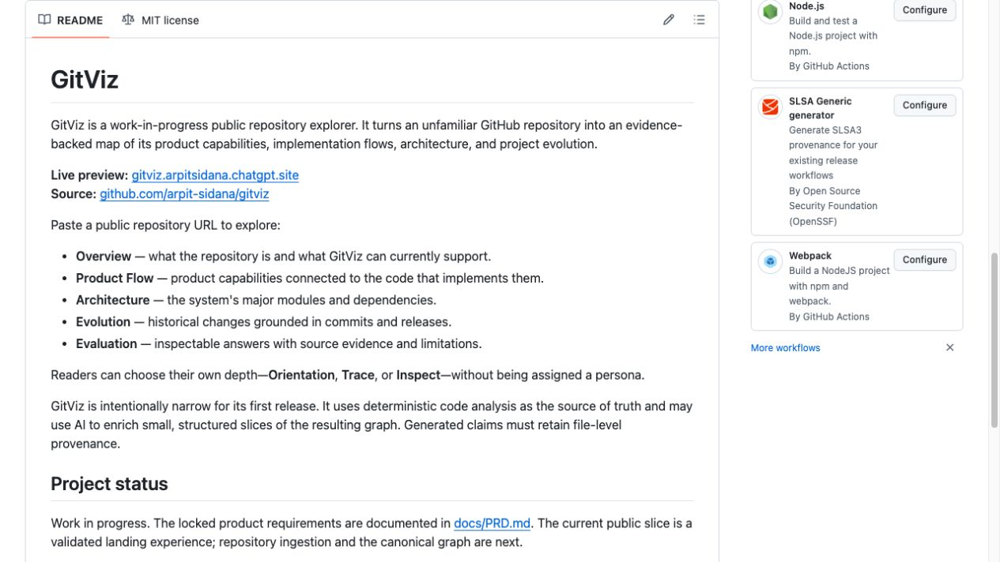
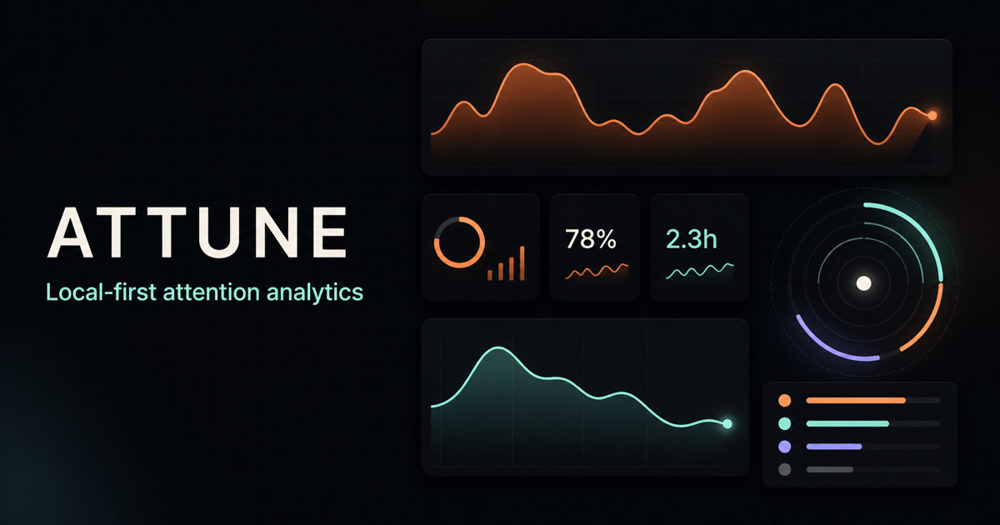
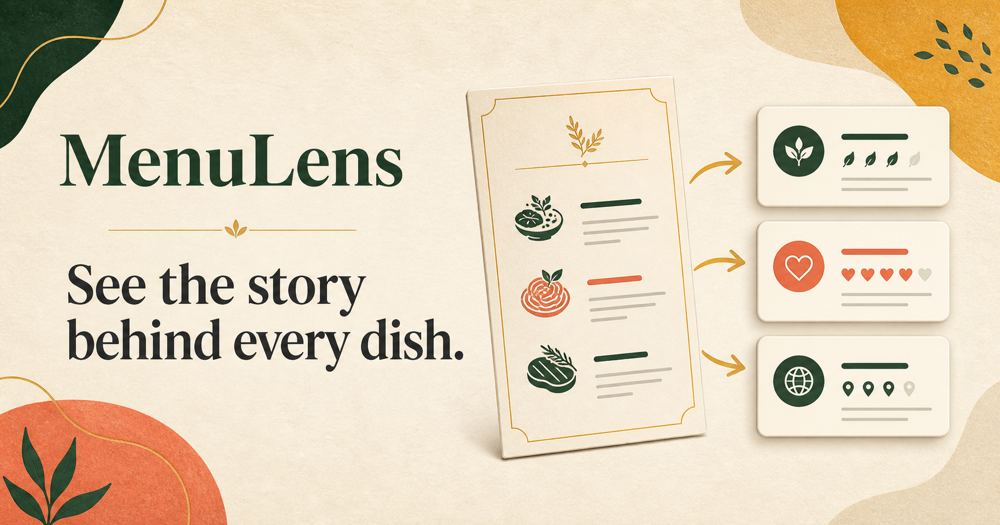

01
GitViz
developer tools · code intelligence
An evidence-backed repository explorer that maps product capabilities, implementation flows, architecture, and project evolution back to the source code.
resume & github
A concise view of my product experience and selected hands-on builds.
01
Technical product management across AI/ML, cloud platforms, identity, risk, and enterprise software.
02
Three products exploring how software can make complex systems, personal behavior, and everyday choices easier to understand.

01
developer tools · code intelligence
An evidence-backed repository explorer that maps product capabilities, implementation flows, architecture, and project evolution back to the source code.

02
personal analytics · privacy
A local-first macOS attention analytics dashboard built on ActivityWatch, with AFK-aware metrics and Safari and Chrome context while keeping raw behavioral data private.

03
multimodal AI · food
An AI menu-intelligence concept that turns unfamiliar dish names into useful descriptions, cultural context, dietary signals, and practical ordering guidance.